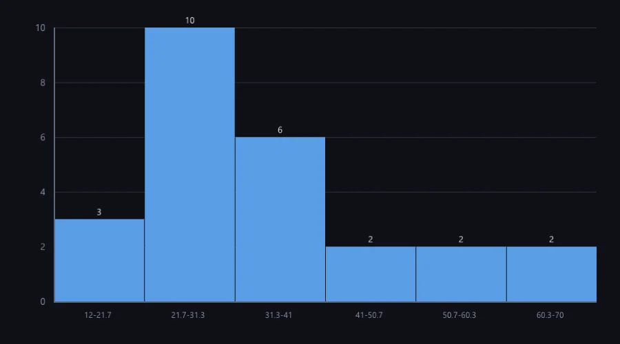

Statistiques et visualisation
Un noyau de calcul soigneux et des graphiques testés à l'octet ; les tests non paramétriques, le rééchantillonnage et la moitié des types de graphiques sont dus.
2 Strong · 4 Solid · 3 Partial · 3 Emerging
Mesuré contre : R · scipy.stats · statsmodels · matplotlib · Dossiers : base/stats(s'ouvre dans un nouvel onglet) · Le guide des fonctions de ce domaine

Repensé depuis les premiers principes
Ce que Softanza a gardé de ce qui marche, et ce qu'elle a repensé, tel que la bibliothèque l'a écrit dans ses documents de conception et ses narrations.
La manière SoftanzaExplorer avant de modéliser : les données sont un ajustement plus un résidu, calculés pour qu'une valeur extrême ne les fausse pas, et les données indiquent elles-mêmes leur échelle de lecture.
Gardé des meilleures pratiques
- Par défaut, la variance divise par N−1, comme dans R et pandas. Ce choix est écrit une seule fois dans le moteur : tous les modules répondent pareil. source(s'ouvre dans un nouvel onglet)
- Les méthodes de Tukey sont reprises telles quelles : quarts, polissage par médianes, droite résistante, lisseurs. On les vérifie contre R et des exemples publiés, jamais contre leurs propres résultats. source(s'ouvre dans un nouvel onglet)
- Les graphiques gardent les bons usages : graduations sur des nombres ronds (1, 2, 2,5, 5 fois une puissance de dix), une légende pour plusieurs séries, des barres d'histogramme jointives. source(s'ouvre dans un nouvel onglet)
Repensé
- L'exploration ne produit ni valeur p, ni intervalle, ni prévision. L'inférence s'appelle délibérément : un motif trouvé dans les données ne passe jamais pour une hypothèse posée d'avance. source(s'ouvre dans un nouvel onglet)
- Une convention ambiguë est nommée, jamais choisie en silence. Quarts de Tukey et quartiles par centiles coexistent, car la mesure a montré qu'ils diffèrent ; chaque affichage indique lequel il emploie. source(s'ouvre dans un nouvel onglet)
- Un récit sur des données ne calcule rien. Chaque nombre du texte vient de l'ajustement ou d'un constat, et une vérification refuse tout chiffre sans source. source(s'ouvre dans un nouvel onglet)
- Un seul modèle de graphique, plusieurs rendus. Terminal, SVG et PNG partagent le sens (valeurs, libellés, options) mais pas la mise en page, car caractères et pixels diffèrent. source(s'ouvre dans un nouvel onglet)
The compute core is genuinely careful -- SIMD Neumaier summation, engine hypothesis tests that never return a bare p-value, and a chart pipeline byte-tested against captured ground truth. But this is not yet scipy.stats or R: nonparametric tests, resampling and time-series are absent, half the analyst's chart types don't render, and the exploratory (Tukey) tier is a plan with no code. A strong foundation, honestly incomplete.
Ce qu'un artisan en fait, et ce qui se distingue
- Lane-parallel Neumaier compensated summation (measured 2.5x)
- Hypothesis tests never return a bare p-value: effect size and a conclusion with every one
- Chart renderers byte-tested against captured ground truth (107 parity assertions)
- Three backends per chart: engine terminal, deviceless SVG, GPU PNG
Ce qui est dû
- Nonparametric and normality tests (Mann-Whitney, Kruskal-Wallis, KS, Shapiro-Wilk)
- The statistical chart family (box, violin, pie/donut, heatmap, area)
- Bootstrap CI and permutation test over the existing sampler
- Multiple regression, GLM and diagnostics; a real time-series lane; the unbuilt Tukey tier
La manière Softanza, exécutée
Ce que Softanza fait autrement dans ce domaine, montré par du code tiré de ses narrations et de ses gardes, et exécuté pour cette page.
Un résumé résistant dit en clair quelle convention il emploie : charnières et quartiles ne se confondent jamais.
aV = [ 2, 4, 4, 5, 7, 9, 12, 25 ] oS = StzTukeySummaryQ(aV) ? oS.Why()
a Tukey summary of 8 value(s) under Tukey's fourths (hinges at depth (floor((n+1)/2)+1)/2): hinges 4 | 6 | 10.5, fourth-spread 6.5, 1 outside, 0 far out
exécuté le 2026-10-01 21:18 dans la bibliothèque au commit 0e72e2e2c ; tiré de base/education/program/courses/math/chapters/13-tukeys-first-look.en.md(s'ouvre dans un nouvel onglet)
Une table ajustée par médianes devient des verdicts exploitables par un programme : le rapport dit que la table n'est pas saine, et quel résidu la rompt.
aDeaths = [ [ 14, 15, 14 ], [ 7, 4, 7 ], [ 8, 2, 10 ], [ 15, 9, 10 ], [ 0, 2, 0 ] ]
oF = StzTukeyFitQ(aDeaths)
oF.Polish()
oRep = StzTukeyReportQ("deaths", [ oF ])
? oRep.IsSound()
aE = oRep.Errors()
? len( aE )
? aE[1][:message]0 2 residual -5 lies 5 fourth-spread(s) past the hinge, beyond the far-out fence at 3
exécuté le 2026-10-01 21:18 dans la bibliothèque au commit 0e72e2e2c ; tiré de base/education/program/courses/math/chapters/13-tukeys-first-look.en.md(s'ouvre dans un nouvel onglet)
À partir de l'ajustement précédent, le récit ne calcule rien et vérifie lui-même que chaque nombre affiché vient de l'ajustement ou d'un constat.
oSt = StzTukeyStoryQ(oF, oRep) acP = oSt.Paragraphs() ? acP[1] ? oSt.IsHonest()
A table of 5 rows and 3 columns was fitted by median polish, which converged in 2 sweep(s). The common value is 8 and the residuals' fourth-spread, the scale every judgement below is in, is 1. 1
exécuté le 2026-10-01 21:18 dans la bibliothèque au commit 0e72e2e2c ; tiré de base/education/program/courses/math/chapters/13-tukeys-first-look.en.md(s'ouvre dans un nouvel onglet)
Les couloirs, un par un
Les couloirs et leurs notes sont cités tels qu'ils ont été lus à la source, le Read from the source on 2026-09-16.